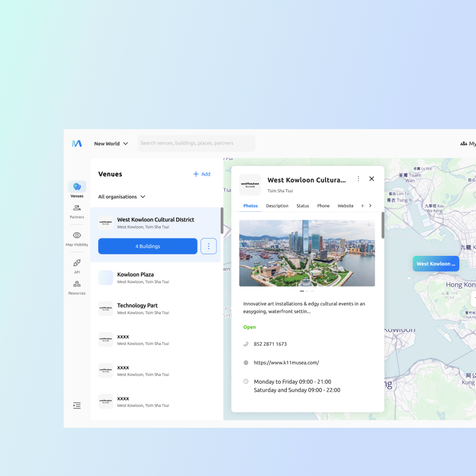
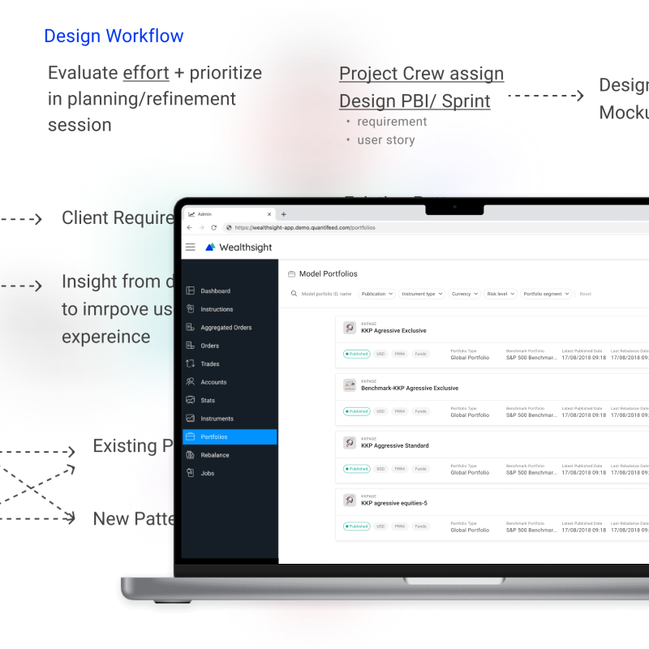
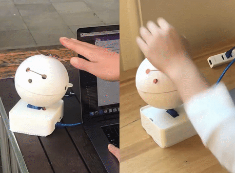
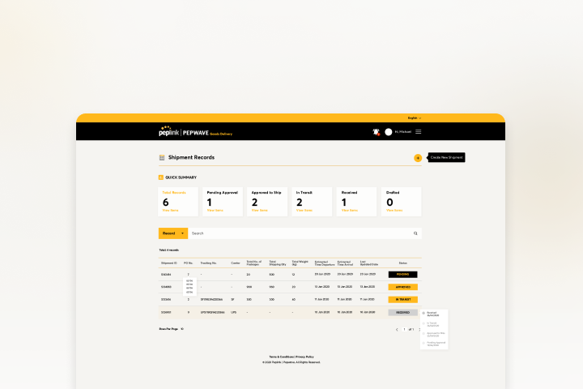
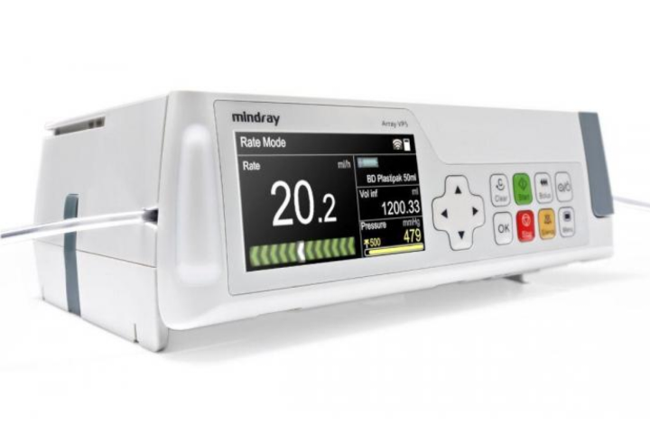
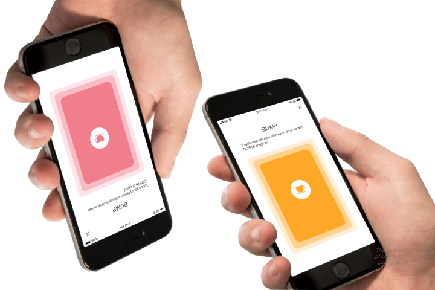
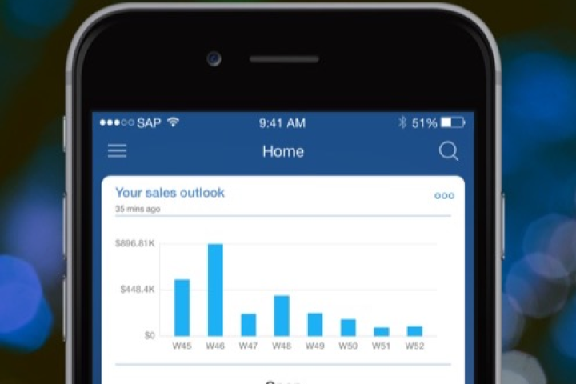
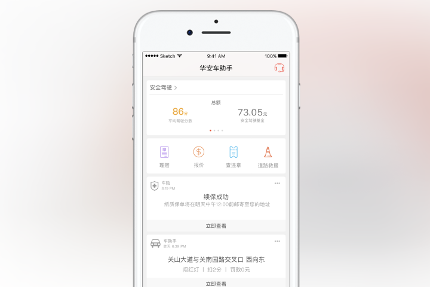
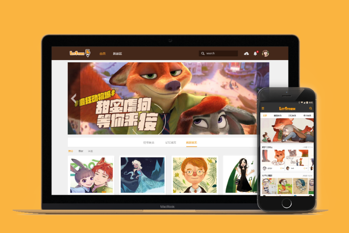

Bringing clarity to complex financial products.
6+ years designing wealth, onboarding, and compliance products across crypto and fintech — research first, measured after launch. Resume →

One portfolio view across crypto and US/HK securities for institutional and HNW clients, on App and Web.
- Design 50%
- AI prototyping 50%

Guided selection and a document checklist replaced a text-heavy flow, after research showed 82% of users submitted more than once.
- Research 20%
- Design 60%
- Measurement 20%

0→1 client onboarding for two regulated launches: AUSTRAC in Australia and MiCA in Europe.
- Design 100%

Outlined the risks behind a token in plain language and at-a-glance signals, helping retail users avoid losses on volatile assets.

Led 3 designers across 5 internal platforms and a shared design system, then redesigned the agent workspace for 200+ support agents.
- Design 50%
- Usability test 50%

Watched analysts work real cases, then redesigned the alert page, fund-flow graph and risk pages around how they investigate.
- Research 30%
- Design 60%
- Measurement 10%

Defined the metrics, events, and dashboards we needed to track user experience as a first-class product signal — partnering with data and PM.

From blank page to shippable MVP — defined the editor canvas, layer model, and review workflow with two engineers.

Built a structured rubric and interview format to bring fairness and consistency to design hiring at the company.

Mapped the handoff between design, product, and engineering, then established a workflow and review rituals that stuck.

Led UX for a scalable agent-application flow — working with research, BAs, engineering and the design-system owner from invite through submission.
- Research 30%
- Design 60%
- Usability test 10%

The model-portfolio tool used by HSBC, DBS and MUFG. Designed the account dashboard 0→1, redesigned five modules and rebuilt the design system.
- Research 40%
- Design 40%
- Usability test 20%

Explored intuitive ways to interact with 3D data on a multi-surface setup — Unity prototype, elicitation study, and literature review.

Three robotic lights that follow or guide people through sequential tasks — exploring which factors shape the perception of "smartness".

Two bots that exchange touch warmth across distance and turn toward the sender's voice when receiving a message.







